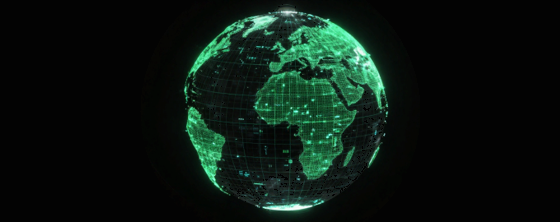

Spatial Analytics
Advanced pattern detection and forecasting tools.
Cutting-edge GIS solutions that transform spatial data into actionable intelligence for smarter decisions.

Advanced pattern detection and forecasting tools.
Interactive maps tailored to your needs.
Satellite and drone imagery processing.
Unified spatial data platforms.